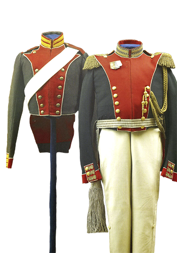
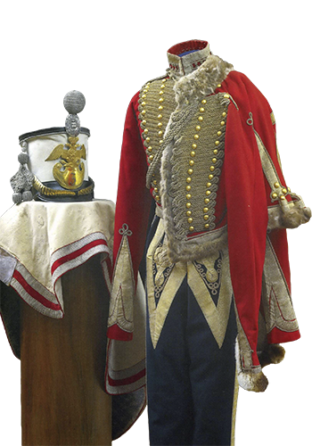
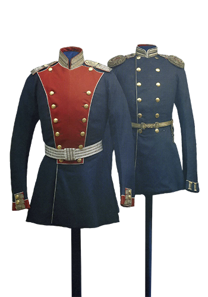
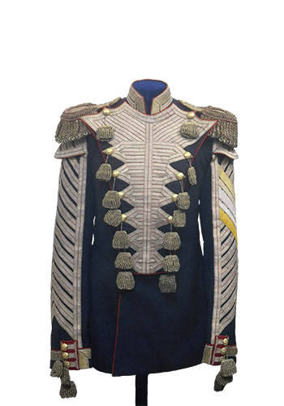
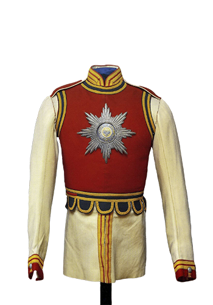
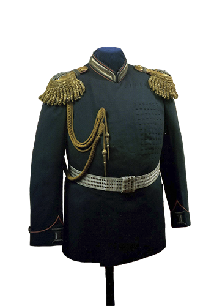
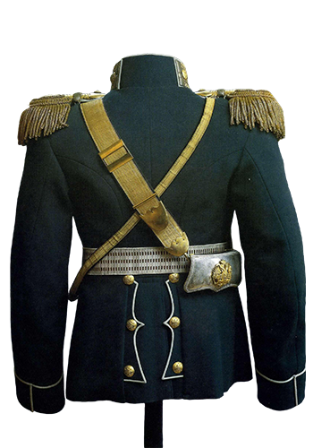

Изменения военной униформы в XIX веке начались в период правления Павла I. В 1800 году для солдат были утверждены двубортные кафтаны, для офицеров - однобортные. Был введен новый рисунок золотого шитья и новая форма обшлагов на кафтанах офицеров. Солдатские и офицерские мундиры имели на лифе тесёмочные стяжки, позволявшие в зимнее время надеть под мундир овчинную безрукавку или меховой жилет.
Военная форма русских солдат 19 века была перенята от прусской, потому что прусская армия была самой передовой и другие армии на неё равнялись.
Некоторые мундиры, учрежденные Павлом I, прижились надолго, их носили и в эпоху его сыновей - Александра I, Николая I (например, вицмундир кавалергардского и конного полков).
С приходом к власти Александра I 24 июля 1801 года создается «Особая воинская комиссия» под председательством великого
князя Константина Павловича. Наряду с другими положениями комиссия должна была обсудить и вопрос о форме одежды армии.
Относительно обмундирования в указе императора отмечалось:
С меньшими издержками дать одежде вид наиболее воинственный
и прочный и не только для всех оборотов службы и для сохранения здоровья и бодрости солдат вообще удобнейший, но
и каждому роду войск приличнейший
В результате данной работы были установлены новые мундиры фрачного покроя, двуугольные шляпы, высокие сапоги и шинели. Было решено отменить пудру и косы, а волосы обрезать по нижнему краю воротника. «Пудру же иначе не употреблять, как в большие парады и праздники». Здесь можно вспомнить известное выражение:
Пудра – не порох, букли – не пушка, коса – не тесак, я не немец, а природный русак
Николай I, будучи хорошо образованным в военном деле, лично занимался проблемами армии. Однако основное внимание императора привлекал внешний вид солдата, а не техническое оснащение войск. И до своего воцарения и после Николай I принимал непосредственное участие в разработке образцов военной одежды. Его завораживали блеск и изящество мундира. При этом не учитывалось главное назначение мундира - защита от непогоды, обеспечение свободы движений и удобство при обращении с оружием в боевой обстановке.
В основном же в военной форме за период 1825 - 1854 годов не произошло кардинальных перемен. Вносилось множество различных декоративных элементов, направленных лишь на украшение мундира. Наиболее существенными нововведениями было появление в армейских частях однобортных мундиров и замена ранее используемых панталон с крагами рейтузами, которые носили поверх сапог. В 1846 году для войск Отдельного Кавказского корпуса ввели мундиры нового образца, пехота вместо фрачных мундиров получила полукафтаны, а кавалерия - короткие куртки, заправленные в шаровары.
За время царствования Николая I трансформации в основном подвергались головные уборы. Так, в 1844 - 1845 годах кивера повсеместно были заменены касками. Исключение составляли только гусарские и уланские полки.

Последствия увлечения «мундироманией и украшательством» в царствование Николая I сказались в ходе Крымской войны 1853 -
1856 годов. Солдаты были одеты неудобно. На голове носили каску, которая на парадах способна была производить эффект на
зрителя, но в военном отношении оказывалась совершенно непрактичной.
В Николаеве нас встретил флигель-адъютант граф Левашев с распоряжением - оставить каски в особых складах.
Солдаты от души благодарят за распоряжение об оставлении касок. И то сказать, что шлемы не только не приносили
нам пользы, но делали вред. От дождей и сильной жары каски сжались до того, что едва держались на головах солдат,
давя их и сжимая до головной боли. Небольшой ветер - глядишь, и летят каски с голов. А чистка медных украшений,
а сбережение чешуи, чтоб не разорвалась, да звенья не рассыпались, да шишак чтоб не сломался - разве мало это
поглощало времени и труда?
- так писал 12 октября 1854 года один из 11-й пехотной дивизии П.В. Алабин.
Постепенно положение стало меняться к лучшему. К весне 1855 года была
...получена новая форма офицерского пальто.
А.В.Хрулёв поспешил себе сделать, и могли все последовать его примеру, но так как серой летней материи в городе не
оказалось, сшили какие попало, и явились пальто зеленоватые, голубые и даже лиловые. Там на это не смотрели; даже
солдатам в одежде была полная свобода; суконные фуражки заменялись белыми и велено было не снимать их при встрече с
офицерами
, - вспоминал участник обороны Севастополя П.И.Степанов.
В декабре 1854 по года по именному указу Николая I был создан на средства фамилии полк в составе 4500 человек. И по внешнему виду, и по принципу комплектования полк существенно отличался от остальных частей. Набирался он из крестьян северных губерний, преимущественно охотников, на добровольной основе. Обмундирование полагалось «максимально близкое к народной одежде». Состояло оно из полукафтана, напоминавшего армяк, широких шаровар, заправленных в высокие мягкие сапоги, и шапки с квадратным суконным верхом и барашковым околышем. Всем чинам полка разрешалось носить бороду.

Тяжелые уроки Крымской войны 1853 -1856 годов заставили правительство серьезно заняться техническим переоснащением
армии. По традиции военные реформы начались с нововведений в униформе. Об обилии изменений в обмундировании в период
1856 - 1859 годов пишет Е.А.Штакеншнейдер:
Одно только приводит в недоумение — это беспрерывные перемены формы
военных. В Петербурге, кажется, нет двух офицеров одного и того же полка, одинаково одетых: один уже в повой форме,
другой же не успел еще себе сшить, а третий уже в самой новейшей
Трансформация униформы во второй половине 1850-х годов началась с замены фрачных мундиров на полукафтаны. Во всех войсках были введены двубортные мундиры и упрощенные в отделке вицмундиры, которые в 1872 году были заменены однобортными. Верхней одеждой всех чипов стали шипели. Нижние чины и офицеры кавалерии получили белые полотняные кители, вначале как рабочую форму, а впоследствии и как повседневную.
В 1862 году кардинально меняется тип головного убора - вводятся кепи высотой 11-12 сантиметров сзади, спереди - 6-8 сантиметров. При параде оно украшалось султаном и гербом. В том же году для занятий гимнастикой вводятся белые льняные рубахи-гимнастерки. В дальнейшем они стали основной формой одежды нижних чинов.
В войсках южных военных округов и Донском казачьем войске было разрешено ношение белых чехлов на фуражках и кепи, а в Кавказском и Туркестанском военных округах слали носить кожаные штаны-чембуры из овечьей или козьей кожи, которые, по поверьям,предохраняли от змей. В 1869 году устанавливается особый тип формы - походная форма. В связи с этим проводится четкая регламентация всего обмундирования и порядок его ношения, с ежегодным утверждением и оповещением всех о нем. Форма отныне подразделялась на городскую, парадную, праздничную, воскресную, повседневную и походную.
В результате военных реформ 1860 - 1870-х годов была введена действительно удобная походная форма. Парадный вариант потерял свое самодовлеющее значение.
В марте 1881 года на российский престол вступает Александр III.
Значительно изменился и внешний вид армии. Военный министр генерал П. С. Ванновский и Александр III упростили покрой военного мундира. Он стал более скромным, практичным и удобным в ношении. Покрой его был приближен к русскому национальному костюму. Новый мундир был просторным, имел вид куртки с запашным бортом без пуговиц. Глубокий запах спереди и складки сзади - элементы, характерные для народной верхней одежды, типа поддевки или зипуна. Покрой обеспечивал солдату не только свободу в движении, но и тепло и удобство. Затяжной шнур на лифе куртки позволял в зимнее время поддеть под него фуфайку. Основным преимуществом нового мундира являлось то, что его легко было подогнать по фигуре. При мобилизации или наборе в армию он мог выдаваться в готовом виде.
Новая форма, с некоторыми отличиями, была распространена во всей армии. Удобство в ношении, легкость подгонки были положительными качествами мундира. Однако отмена декоративных элементов, простота формы вызвали новую проблему - негативное к ней отношение. Это явилось отрицательным результатом реформы.

Сам же император с большим удовольствием и умением носил форму, которая полностью соответствовала его характеру и
внешнему виду. Вот как описывает художник А.Н.Бенуа свою встречу с Александром III:
Меня поразила его «громоздкость», его тяжеловесность и величие. Введенная в самом начале царствования новая
военная форма с притязанием на национальный характер, ее угрюмая простота и, хуже всего, эти грубые сапожищи с
воткнутыми в них штанами возмущали мое художественное чувство. Но вот в натуре обо всем это забывалось, до того
лицо государя поражало своей значительностью
Со сменой царя в России, как правило, менялась и военная форма. Однако после смерти Александра III этого не произошло. До 1897 года она не подверглась каким-либо изменениям, за исключением восстановления некоторых декоративных деталей.
В 1897 году была проведена унификация приборных цветов - лацканов, воротников, обшлагов - в кавалерии, по образцу пехотных полков. Был изменен покрой мундира, он стал двубортным, с шестью пуговицами, карманными клапанами и выпушками.
Развитие военной техники и оружия к концу XIX века коренным образом изменило тактику ведения боевых действий. Сомкнутый строй сменился рассыпным. Широко распространилась позиционная война. Эти новые боевые условия вызвали изменения и в форме. С полевого походного обмундирования стали исчезать яркие расцветки. Появилась новая форма одежды - зеленая, защитного цвета, целью которой было сделать войска менее заметными на фоне местности.
Пожалуй, единственным положительным нововведением стали солдатские шинели, заменившие в походе плащи-епанчи, хотя и для этого имелся прототип в виде шинели, введенной для егерей в 1770 году. Возвращение к устарелым прусским порядкам военной службы, обмундированию, прическам и кукольному единообразию солдат, вплоть до наклеивания черненых усов тем, у кого они еще не росли, вызывало осуждение всех передовых военных деятелей. Его ярко выразил А.В.Суворов, говоривший: "Русские пруссаков всегда бивали, что же тут перенимать?"
В конце царствования Павла I на груди мундиров гвардейских офицеров и чинов царской свиты появилось фигурное золотое шитье. Орнамент в каждом полку был особый и в уменьшенном размере нашивался также на воротник и обшлага мундиров. От пруссаков в гатчинских войсках была заимствована, а затем распространена на все вооруженные силы единообразная расшивка желтой или белой тесьмой музыкантских мундиров в виде углов на рукавах, обращенных вершинами вверх, и полукруглых наплечников, так называемых "крылец". Также по прусскому образцу полки стали называть не по названиям городов, а по фамилиям их шефов.